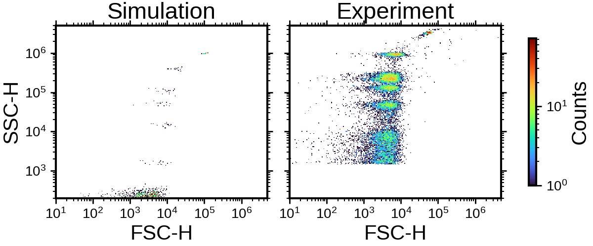

Note
Go to the end to download the full example code.
Compare simulated and experimental flow cytometry bead distributions#
This example compares simulated and experimental flow cytometry measurements for Rosetta bead populations.
The simulated data are generated with FlowCyPy, processed with a dynamic discriminator and a global peak locator, and compared against an experimental Cytek dataset in the FSC-H versus SSC-H feature space.
The simulated and experimental distributions are displayed side by side as log-scaled two-dimensional density maps.
from pathlib import Path
import matplotlib.pyplot as plt
import numpy as np
import pandas as pd
from matplotlib.colors import LogNorm
from MPSPlots.styles import scientific
from TypedUnit import ureg
from FlowCyPy import FlowCytometer
from FlowCyPy.digital_processing import (
DigitalProcessing,
discriminator,
peak_locator,
)
from FlowCyPy.fluidics import (
FlowCell,
Fluidics,
SampleFlowRate,
ScattererCollection,
SheathFlowRate,
distributions,
populations,
)
from FlowCyPy.opto_electronics import (
Amplifier,
Detector,
Digitizer,
OptoElectronics,
circuits,
source,
)
def get_current_execution_directory() -> Path:
"""
Return the most useful execution directory for locating example data.
In normal Python execution, ``__file__`` is defined and points to this
script. In some documentation builders, notebooks, galleries, or execution
wrappers, ``__file__`` may be undefined. In that case, the current working
directory is used instead.
"""
file_name = globals().get("__file__")
if file_name is not None:
return Path(file_name).resolve().parent
return Path.cwd().resolve()
def find_experimental_data_path(file_name: str) -> Path:
"""
Locate an experimental data file used by the documentation examples.
The function searches from both the current example directory and the
current working directory. This makes the example robust when executed as
a normal script, by Sphinx-Gallery, or by a documentation CI runner.
Parameters
----------
file_name:
Name of the data file to locate.
Returns
-------
pathlib.Path
Resolved path to the requested data file.
Raises
------
FileNotFoundError
If the file cannot be found in the expected documentation locations.
"""
execution_directory = get_current_execution_directory()
working_directory = Path.cwd().resolve()
search_roots = []
for root in [execution_directory, working_directory]:
search_roots.append(root)
search_roots.extend(root.parents)
candidate_paths = []
for root in search_roots:
candidate_paths.extend(
[
root / "data" / file_name,
root / "docs" / "data" / file_name,
]
)
for candidate_path in candidate_paths:
if candidate_path.is_file():
return candidate_path.resolve()
searched_locations = "\n".join(
f" - {candidate_path}" for candidate_path in candidate_paths
)
raise FileNotFoundError(
f"Could not locate experimental data file {file_name!r}.\n"
f"Searched:\n{searched_locations}"
)
def filter_positive_log_data(
dataframe: pd.DataFrame,
*,
x_column_name: str,
y_column_name: str,
quantile_limits: tuple[float, float],
) -> pd.DataFrame:
"""
Keep strictly positive data and remove extreme values by quantile filtering.
"""
lower_quantile, upper_quantile = quantile_limits
positive_dataframe = dataframe.loc[
(dataframe[x_column_name] > 0)
& (dataframe[y_column_name] > 0),
[x_column_name, y_column_name],
].copy()
if positive_dataframe.empty:
raise ValueError("No strictly positive data available for log-scale plotting.")
x_lower_bound, x_upper_bound = positive_dataframe[x_column_name].quantile(
[lower_quantile, upper_quantile]
)
y_lower_bound, y_upper_bound = positive_dataframe[y_column_name].quantile(
[lower_quantile, upper_quantile]
)
filtered_dataframe = positive_dataframe.loc[
positive_dataframe[x_column_name].between(x_lower_bound, x_upper_bound)
& positive_dataframe[y_column_name].between(y_lower_bound, y_upper_bound)
].copy()
if filtered_dataframe.empty:
raise ValueError("No data remains after quantile filtering.")
return filtered_dataframe
def validate_log_axis_limits(
axis_limits: tuple[float, float] | None,
*,
axis_name: str,
) -> None:
"""
Validate that axis limits are compatible with logarithmic plotting.
"""
if axis_limits is None:
return
lower_axis_limit, upper_axis_limit = axis_limits
if lower_axis_limit <= 0 or upper_axis_limit <= 0:
raise ValueError(f"{axis_name} values must be strictly positive.")
if lower_axis_limit >= upper_axis_limit:
raise ValueError(f"{axis_name} lower limit must be smaller than upper limit.")
def make_logarithmic_bins(
dataframe: pd.DataFrame,
*,
column_name: str,
number_of_bins: int,
axis_limits: tuple[float, float] | None = None,
) -> np.ndarray:
"""
Create logarithmically spaced bin edges for a dataframe column.
"""
if axis_limits is None:
bin_minimum = dataframe[column_name].min()
bin_maximum = dataframe[column_name].max()
else:
bin_minimum, bin_maximum = axis_limits
if bin_minimum <= 0 or bin_maximum <= 0:
raise ValueError(
f"Cannot create logarithmic bins for non-positive {column_name!r} values."
)
if bin_minimum >= bin_maximum:
raise ValueError(
f"Invalid logarithmic bin range for {column_name!r}: "
f"{bin_minimum} >= {bin_maximum}."
)
return np.logspace(
np.log10(bin_minimum),
np.log10(bin_maximum),
number_of_bins,
)
def plot_log_density(
dataframe: pd.DataFrame,
*,
axis: plt.Axes,
x_column_name: str,
y_column_name: str,
title: str,
quantile_limits: tuple[float, float] = (0.001, 0.999),
number_of_bins: int = 250,
x_limits: tuple[float, float] | None = None,
y_limits: tuple[float, float] | None = None,
density_colormap: str = "turbo",
density_minimum_count: int = 1,
):
"""
Plot a log-scaled two-dimensional density map.
"""
validate_log_axis_limits(x_limits, axis_name="x_limits")
validate_log_axis_limits(y_limits, axis_name="y_limits")
filtered_dataframe = filter_positive_log_data(
dataframe,
x_column_name=x_column_name,
y_column_name=y_column_name,
quantile_limits=quantile_limits,
)
x_bins = make_logarithmic_bins(
filtered_dataframe,
column_name=x_column_name,
number_of_bins=number_of_bins,
axis_limits=x_limits,
)
y_bins = make_logarithmic_bins(
filtered_dataframe,
column_name=y_column_name,
number_of_bins=number_of_bins,
axis_limits=y_limits,
)
density_counts, _, _ = np.histogram2d(
filtered_dataframe[x_column_name].to_numpy(),
filtered_dataframe[y_column_name].to_numpy(),
bins=[x_bins, y_bins],
)
masked_density_counts = np.ma.masked_less(
density_counts.T,
density_minimum_count,
)
density_mesh = axis.pcolormesh(
x_bins,
y_bins,
masked_density_counts,
cmap=density_colormap,
norm=LogNorm(),
shading="auto",
)
axis.set_xscale("log")
axis.set_yscale("log")
axis.set_title(title)
axis.set_xlabel(x_column_name)
axis.set_ylabel(y_column_name)
if x_limits is not None:
axis.set_xlim(x_limits)
if y_limits is not None:
axis.set_ylim(y_limits)
return density_mesh
def plot_simulation_experiment_comparison(
*,
simulation_dataframe: pd.DataFrame,
experimental_dataframe: pd.DataFrame,
x_column_name: str = "FSC-H",
y_column_name: str = "SSC-H",
number_of_bins: int = 250,
quantile_limits: tuple[float, float] = (0.0, 1.0),
x_limits: tuple[float, float] = (1e1, 5e6),
y_limits: tuple[float, float] = (1e3, 5e6),
) -> plt.Figure:
"""
Plot simulated and experimental flow cytometry distributions side by side.
"""
figure, axes = plt.subplots(
nrows=1,
ncols=2,
figsize=(12, 5),
sharex=True,
sharey=True,
constrained_layout=True,
)
plot_log_density(
simulation_dataframe,
axis=axes[0],
x_column_name=x_column_name,
y_column_name=y_column_name,
title="Simulation",
number_of_bins=number_of_bins,
quantile_limits=quantile_limits,
x_limits=x_limits,
y_limits=y_limits,
)
density_mesh = plot_log_density(
experimental_dataframe,
axis=axes[1],
x_column_name=x_column_name,
y_column_name=y_column_name,
title="Experiment",
number_of_bins=number_of_bins,
quantile_limits=quantile_limits,
x_limits=x_limits,
y_limits=y_limits,
)
axes[1].set_ylabel("")
figure.colorbar(
density_mesh,
ax=axes,
label="Counts",
shrink=0.85,
)
return figure
def make_scatterer_collection(
*,
diameters,
concentrations,
refractive_index: float,
medium_refractive_index: float,
diameter_standard_deviation_fraction: float,
) -> ScattererCollection:
"""
Create a scatterer collection from bead diameters and concentrations.
"""
scatterer_collection = ScattererCollection()
for diameter, concentration in zip(diameters, concentrations):
diameter_distribution = distributions.Normal(
mean=diameter,
standard_deviation=diameter * diameter_standard_deviation_fraction,
)
sphere_population = populations.SpherePopulation(
name=f"{diameter:~P}",
diameter=diameter_distribution,
refractive_index=refractive_index,
concentration=concentration,
medium_refractive_index=medium_refractive_index,
)
scatterer_collection.add_population(sphere_population)
return scatterer_collection
def make_fluidics(
*,
scatterer_collection: ScattererCollection,
) -> Fluidics:
"""
Create the fluidics model used for the Rosetta bead simulation.
"""
flow_cell = FlowCell(
sample_volume_flow=SampleFlowRate.LOW.value,
sheath_volume_flow=SheathFlowRate.LOW.value,
width=177 * ureg.micrometer,
height=433 * ureg.micrometer,
perfectly_aligned=True,
)
return Fluidics(
scatterer_collection=scatterer_collection,
flow_cell=flow_cell,
)
def make_opto_electronics(
*,
wavelength,
bit_depth: int,
forward_voltage_range,
side_voltage_range,
forward_responsivity,
side_responsivity,
forward_current_noise_density,
side_current_noise_density,
voltage_noise_density,
current_noise_density,
cutoff_frequency,
time_constant,
include_shot_noise: bool,
) -> OptoElectronics:
"""
Create the optical source, detectors, analog processing, and digitizer model.
"""
light_source = source.Gaussian(
waist_z=10e-6 * ureg.meter,
waist_y=60e-6 * ureg.meter,
wavelength=wavelength,
optical_power=200 * ureg.milliwatt,
bandwidth=10 * ureg.megahertz,
include_shot_noise=include_shot_noise,
)
detectors = [
Detector(
name="SSC",
phi_angle=90 * ureg.degree,
numerical_aperture=1.1,
responsivity=side_responsivity,
bandwidth=10 * ureg.megahertz,
current_noise_density=side_current_noise_density,
),
Detector(
name="FSC",
phi_angle=0 * ureg.degree,
numerical_aperture=0.1,
cache_numerical_aperture=0.04,
responsivity=forward_responsivity,
bandwidth=10 * ureg.megahertz,
current_noise_density=forward_current_noise_density,
),
]
amplifier = Amplifier(
gain=1 * ureg.volt / ureg.ampere,
bandwidth=2 * ureg.megahertz,
voltage_noise_density=voltage_noise_density,
current_noise_density=current_noise_density,
)
digitizer = Digitizer(
sampling_rate=10 * ureg.megahertz,
bit_depth=bit_depth,
use_auto_range=False,
output_signed_codes=True,
channel_range_mode="shared",
)
digitizer.set_channel_voltage_range(
channel_name="FSC",
minimum_voltage=forward_voltage_range[0],
maximum_voltage=forward_voltage_range[1],
)
digitizer.set_channel_voltage_range(
channel_name="SSC",
minimum_voltage=side_voltage_range[0],
maximum_voltage=side_voltage_range[1],
)
analog_processing = []
if cutoff_frequency is not None:
analog_processing.append(
circuits.BesselLowPass(
cutoff_frequency=cutoff_frequency,
order=2,
gain=2,
)
)
analog_processing.append(
circuits.BaselineRestorationServo(
time_constant=time_constant,
initialize_with_first_sample=False,
)
)
return OptoElectronics(
source=light_source,
detectors=detectors,
amplifier=amplifier,
digitizer=digitizer,
analog_processing=analog_processing,
)
def make_digital_processing(
*,
threshold,
pre_buffer: int,
post_buffer: int,
) -> DigitalProcessing:
"""
Create the digital processing model used to extract event features.
"""
dynamic_discriminator = discriminator.DynamicWindow(
trigger_channel="SSC",
threshold=threshold,
pre_buffer=pre_buffer,
post_buffer=post_buffer,
max_triggers=-1,
)
global_peak_locator = peak_locator.GlobalPeakLocator(
compute_width=False,
compute_area=True,
allow_negative_area=True,
support=peak_locator.FullWindowSupport(),
polarity="positive",
height_mode="peak_to_baseline",
baseline_mode="edge_mean",
)
return DigitalProcessing(
discriminator=dynamic_discriminator,
peak_algorithm=global_peak_locator,
)
def simulate_rosetta_beads(
*,
diameters,
concentrations,
refractive_index: float,
medium_refractive_index: float,
diameter_standard_deviation_fraction: float,
wavelength,
bit_depth: int,
forward_voltage_range,
side_voltage_range,
forward_responsivity,
side_responsivity,
forward_current_noise_density,
side_current_noise_density,
voltage_noise_density,
current_noise_density,
background_power,
cutoff_frequency,
time_constant,
pre_buffer: int,
post_buffer: int,
threshold,
run_time,
include_shot_noise: bool,
):
"""
Simulate and process a flow cytometry acquisition for Rosetta bead populations.
"""
scatterer_collection = make_scatterer_collection(
diameters=diameters,
concentrations=concentrations,
refractive_index=refractive_index,
medium_refractive_index=medium_refractive_index,
diameter_standard_deviation_fraction=diameter_standard_deviation_fraction,
)
fluidics = make_fluidics(
scatterer_collection=scatterer_collection,
)
opto_electronics = make_opto_electronics(
wavelength=wavelength,
bit_depth=bit_depth,
forward_voltage_range=forward_voltage_range,
side_voltage_range=side_voltage_range,
forward_responsivity=forward_responsivity,
side_responsivity=side_responsivity,
forward_current_noise_density=forward_current_noise_density,
side_current_noise_density=side_current_noise_density,
voltage_noise_density=voltage_noise_density,
current_noise_density=current_noise_density,
cutoff_frequency=cutoff_frequency,
time_constant=time_constant,
include_shot_noise=include_shot_noise,
)
cytometer = FlowCytometer(
fluidics=fluidics,
background_power=background_power,
)
run_record = cytometer.acquire(
run_time=run_time,
opto_electronics=opto_electronics,
)
digital_processing = make_digital_processing(
threshold=threshold,
pre_buffer=pre_buffer,
post_buffer=post_buffer,
)
return cytometer.process_run(
run_record=run_record,
digital_processing=digital_processing,
)
Run the simulation#
The simulated bead mixture contains six populations with diameters from 70 nm to 293 nm. The resulting event features are extracted from the detected peaks and converted to a pandas dataframe.
run_record = simulate_rosetta_beads(
diameters=np.asarray([70, 100, 125, 147, 203, 293]) * ureg.nanometer,
concentrations=(
np.asarray([0.5, 0.5, 0.5, 0.5, 0.5, 0.5])
* 2
* 1e6
* ureg.particle
/ ureg.milliliter
),
refractive_index=1.80,
medium_refractive_index=1.33,
diameter_standard_deviation_fraction=0.02,
wavelength=488 * ureg.nanometer,
bit_depth=22,
forward_voltage_range=(
-3_000_000 * ureg.picovolt,
3_000_000 * ureg.picovolt,
),
side_voltage_range=(
-16_000_000 * ureg.picovolt,
16_000_000 * ureg.picovolt,
),
forward_responsivity=(1 / 6) * ureg.ampere / ureg.watt,
side_responsivity=1 * ureg.ampere / ureg.watt,
forward_current_noise_density=1500 * ureg.femtoampere / ureg.sqrt_hertz,
side_current_noise_density=225 * ureg.femtoampere / ureg.sqrt_hertz,
voltage_noise_density=0 * ureg.femtovolt / ureg.sqrt_hertz,
current_noise_density=0 * ureg.femtoampere / ureg.sqrt_hertz,
background_power=0 * ureg.nanowatt,
cutoff_frequency=2.3 * ureg.megahertz,
time_constant=20 * ureg.microsecond,
pre_buffer=1,
post_buffer=1,
threshold="2.8sigma",
run_time=100 * ureg.millisecond,
include_shot_noise=True,
)
simulation_dataframe = pd.DataFrame(
run_record.peaks.get_flattened_dataframe()
)
Load the experimental data#
The experimental Cytek Rosetta bead data are loaded from the documentation
data directory. The path lookup is robust to documentation runners where
__file__ is not defined.
experimental_data_path = find_experimental_data_path(
file_name="cytek_rosetta_beads.csv",
)
experimental_dataframe = pd.read_csv(experimental_data_path)
Compare simulated and experimental distributions#
The two datasets are shown with identical FSC-H and SSC-H limits so that the visual comparison reflects the same feature space.
with plt.style.context(scientific):
plot_simulation_experiment_comparison(
simulation_dataframe=simulation_dataframe,
experimental_dataframe=experimental_dataframe,
x_column_name="FSC-H",
y_column_name="SSC-H",
number_of_bins=250,
quantile_limits=(0.0, 1.0),
x_limits=(1e1, 5e6),
y_limits=(2e2, 5e6),
)
plt.show()

Total running time of the script: (0 minutes 6.147 seconds)